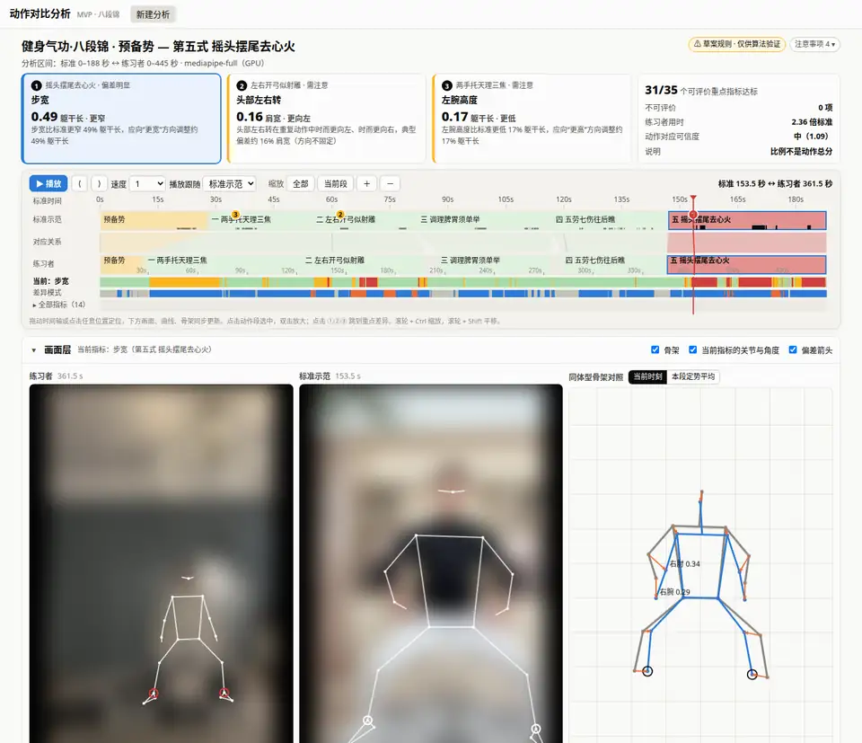
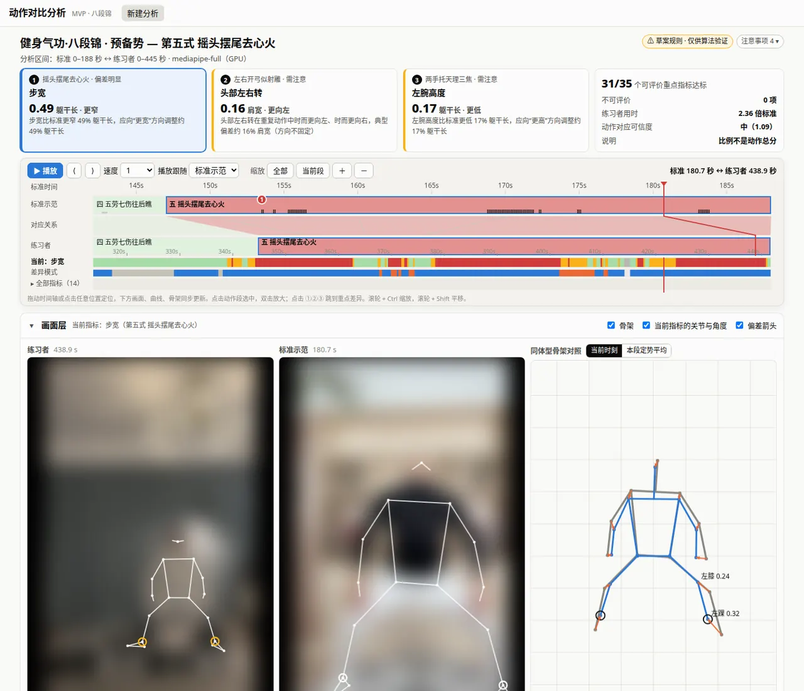

Joint-by-joint comparison of human movement against a reference.
MotionCoach aligns a practitioner's video with a reference performance by movement phase, not by clock time. It measures interpretable joint indicators and shows exactly where, when and how strongly the two differ, together with how much evidence supports each result.

What it does
The first application is Baduanjin (八段锦), a traditional Chinese qigong routine. The engine itself knows nothing about any particular discipline: each application supplies a rules profile and an annotated reference.
Analyses what both videos share
A fast coarse pass locates every section in the practitioner video and checks detection, foot visibility, camera cuts and correspondence quality. Full-rate analysis runs only on the longest stretch that passes.
Matches movement phases
Two-stage DTW, mirror-invariant then per section, copes with practitioners who are 2–3× slower or repeat moves more often. Timing and shape differences are reported separately.
Per-joint differences with status
Fourteen named 2D indicators: joint angles, wrist height, trunk lean, head turn, stance width and hip height. Where evidence is thin the result is not evaluable or uncertain, never a silent pass.
A timeline you can drag
The reference timeline sits on top and the practitioner timeline below, joined by correspondence bands. Status strips and issue markers sit on the same axis, and the playhead drives videos, skeletons and curves together.
Body-normalised skeletons
Both bodies are scaled to one standard figure, keeping each bone's own 2D direction. This reduces the effect of body size and camera distance, and difference vectors point from the reference to the practitioner.
Swappable, comparable algorithms
End users run MediaPipe, GPU first. Developers benchmark RTMPose, RTMW, RTMW3D and YOLO on identical frames, with speed, stability and P95 measurement differences.
How it works
Each stage writes structured evidence. Rules turn evidence into statuses; the client only displays them and never recomputes them.
- NormaliseBoth videos become H.264 proxies with rotation applied and timestamps preserved.
- LocateA 2 fps coarse alignment checks every section and picks the shared, continuous interval.
- Estimate posesPose estimation runs on the interval only, on an absolute k/fps sampling grid, GPU first.
- Align & compareCoarse then per-section DTW; signed differences at key moments, with coverage and timing.
- Evaluate & showProfile tolerances and view limits produce statuses, which open in the timeline workbench.

Built for checking, not just viewing
- Denominators everywhere. “31/35 evaluable focus indicators within tolerance”, with the not-evaluable count listed alongside.
- Status that respects the camera. Movements a frontal view cannot measure are hatched, not coloured green.
- Mirror-aware. Selfie recordings and mirror-side practice are independent transforms; together they cancel.
- Reproducible inputs. Content-addressed caches keyed by video, model, device class and sampling grid.
- Exportable. Aligned per-moment data as CSV, with technical metadata in every report.
Pose backends
MediaPipe is the default. The others are for developer-side comparison. 3D methods from our survey are catalogued with their requirements.
| Backend | Output | Role | GPU path | Licence |
|---|---|---|---|---|
| MediaPipe Pose Landmarker | 33 points + hip-centred 3D | Default | GPU delegate (EGL) | Apache-2.0 |
| RTMPose / RTMO | COCO-17 | Comparison | ONNX Runtime CUDA | Apache-2.0 |
| RTMW | 133 whole-body points | Comparison | ONNX Runtime CUDA | Apache-2.0 |
| RTMW3D | 133 points + 3D (not metric) | 3D experiments | ONNX Runtime CUDA | Apache-2.0 |
| YOLO11 / YOLO26 pose | COCO-17 | Comparison | PyTorch CUDA | AGPL-3.0 |
| GVHMR | World-grounded SMPL motion | 3D candidate | PyTorch CUDA | Research; SMPL needs registration |
| SAM 3D Body | Single-image body mesh | 3D candidate | PyTorch CUDA | SAM Licence; gated weights |
Quickstart
git clone https://github.com/BMProjects/MotionCoach.git && cd MotionCoach
uv sync # Python 3.12, FFmpeg required
uv run motioncoach serve # http://127.0.0.1:8765
uv run motioncoach analyze --reference baduanjin_demo_a --user practice.mp4 --mirrored yes
uv sync --extra rtm --extra yolo # developer backends (ONNX Runtime GPU, Ultralytics)
uv run motioncoach bench --reference baduanjin_demo_a --user practice.mp4 --backends mediapipe-full,rtmw-lResearch prototype. The Baduanjin section boundaries, tolerances and focus joints are drafts that a coach has not yet confirmed. Indicators are 2D and assume a frontal camera. No agreement study against expert ratings or motion capture has been done yet. Sample videos are not distributed.
Acknowledgements
- Mruchus/dance-sync-analysis, which inspired the original DanceBattle demo.
- Google MediaPipe: Pose Landmarker and the Tasks API.
- OpenMMLab MMPose: RTMPose, RTMO, RTMW, RTMW3D.
- rtmlib: lightweight ONNX deployment of RTM models.
- Ultralytics: YOLO11 and YOLO26 pose.
- GVHMR (ZJU3DV) and SAM 3D Body (Meta).
- ONNX Runtime, PyTorch, NumPy, SciPy, Numba.
- OpenCV, FFmpeg, FastAPI, Uvicorn.
- librosa, MoviePy, PySide6, used by the legacy demo.
- Playwright, for real-browser verification.